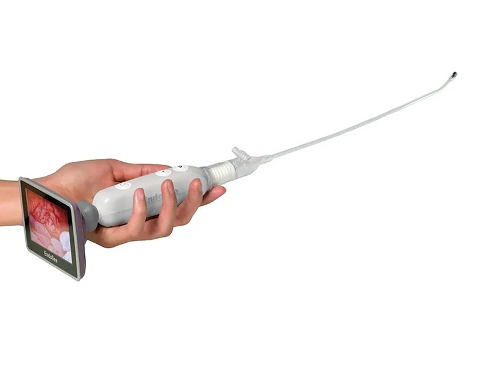
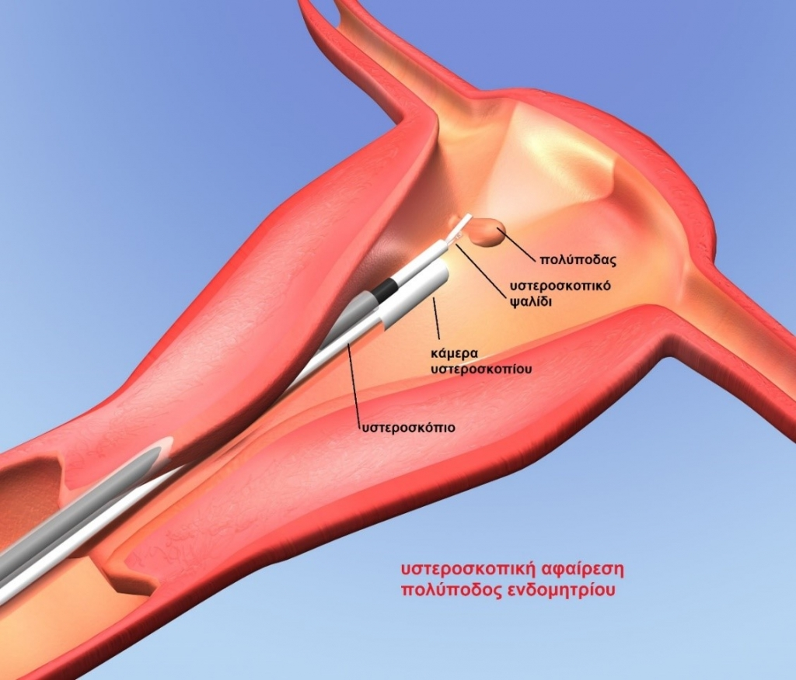
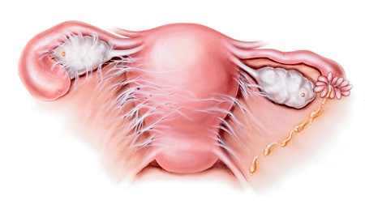
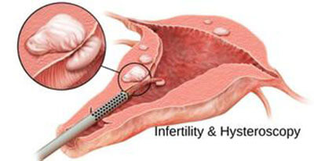

Σεζόν 1 · 6 επεισόδια
1 Υστεροσκόπηση –Τι είναι1 λεπτά · 131 λέξεις

Η υστεροσκόπηση επιλέγεται ως διαγνωστική ή επεμβατική μέθοδος για τη διάγνωση και τη θεραπεία της αιμορραγίας που προέρχεται από τη μήτρα ή την πολύ δύσκολη έμμηνο ρύση. Τα παραπάνω προβλήματα μπορεί να παρουσιαστούν λόγω ορμονικής ανισορροπίας, όγκων, ινομυωμάτων ή πολυπόδων. Επίσης βοηθάει πολύ στην υπογονιμότητα, σε περιπτώσεις συμφύσεων μήτρας και σε πολλές ανωμαλίες της μήτρας όπως το διάφραγμα και οι καθ’ έξιν αποβολές κ.λπ.
Η υστεροσκόπηση δίνει πολύ σημαντικές πληροφορίες για τη μορφολογία και το μέγεθος της κοιλότητας της μήτρας και κατ’ επέκταση για την ποιότητα του ενδομητρίου. Μελετώνται επιπλέον οι σάλπιγγες και ανευρίσκονται ευρήματα όπως ο πολύποδας, οι ουλές κ.α. Επειδή η υστεροσκόπηση είναι μία ελάχιστα επεμβατική διαδικασία, η ανάρρωση είναι σύντομη και εύκολη. Ο πόνος είναι αμελητέος και η γυναίκα μπορεί να επιστρέψει την ίδια ημέρα στο σπίτι της.
2 Διαγνωστική & Επεμβατική Υστεροσκόπηση – Πότε γίνεται1 λεπτά · 234 λέξεις
Η διαγνωστική υστεροσκόπηση γίνεται για να ανιχνευτούν ανωμαλίες της μήτρας, οι οποίες προκαλούν συμπτωματολογία όπως έντονη αιμορραγία κατά την περίοδο και πόνο, πολλαπλές αποβολές και υπογονιμότητα.
Η επεμβατική υστεροσκόπηση προσφέρει ταυτόχρονα θεραπεία εκτός από διάγνωση και χρησιμοποιείται ευρέως στην περίπτωση πολύποδα. Τέλος στην επεμβατική υστεροσκόπηση ο γυναικολόγος μπορεί να λάβει και δείγμα προς βιοψία. Στην περίπτωση που κρίνεται απαραίτητο, η υστεροσκόπηση γίνεται υπό γενική αναισθησία. Αντενδείξεις για υστεροσκόπηση αποτελούν η εγκυμοσύνη, η λοίμωξη του κόλπου και ο καρκίνος της μήτρας.
Η καλύτερη χρονική στιγμή για την εξέταση είναι οι πρώτες μέρες μετά την περίοδο, ώστε να ελαχιστοποιηθούν οι πιθανότητες εγκυμοσύνης. Η ασθενής δεν πρέπει να φάει ή να πιει κάτι για 8 ώρες πριν την εξέταση. Δύο μέρες πριν θα πάρετε αντιβίωση, προληπτικά. Η διάρκειά της δεν υπερβαίνει τα 30 λεπτά. Μετά τη διαδικασία η ασθενής μπορεί να πάει σπίτι, όταν συνέλθει από την αναισθησία. Οι περισσότερες γυναίκες επιστρέφουν σπίτι την ίδια μέρα, άρα το κόστος νοσηλείας είναι μειωμένο. Γενικά δεν θεωρείται επώδυνη διαδικασία, αφού η γυναίκα αισθάνεται μικρούς πόνους περιόδου.
Αίμα μετά από υστεροσκόπηση, υπάρχει περίπτωση να παρατηρηθεί για 7 περίπου ημέρες αν έχει γίνει αφαίρεση πολύποδα ή συμφύσεων. Ο γιατρός σας ανάλογα με την περίπτωσή σας θα σας ενημερώσει αναλυτικά. Σε περίπτωση βαριάς αιμορραγίας ενημερώστε τον αμέσως. Εκτός από αίμα είναι φυσικό να παρατηρήσετε αύξηση κολπικών εκκρίσεων. Δηλαδή:
- Είναι μία ασφαλής εξέταση
- Ο πόνος είναι ελάχιστος
3 Υστεροσκόπηση – Αφαίρεση Πολύποδα1 λεπτά · 81 λέξεις

Οι πολύποδες της μήτρας αντιμετωπίζονται αυστηρά με χειρουργική αφαίρεση μέσω υστεροσκόπησης. Η διαδικασία (όπως προαναφέρθηκε) θεωρείται ρουτίνας για έναν έμπειρο γυναικολόγο. Μία κάμερα βοηθάει για να ελεγχθεί το εσωτερικό της μήτρας, προκειμένου ο γιατρός να διαπιστώσει τους πολύποδες. Το ραντεβού για την επέμβαση προτείνεται τις πρώτες μέρες μετά το τέλος της εμμήνου ρύσεως. Σοβαρές επιπλοκές στην αφαίρεση πολύποδα με υστεροσκόπηση παρατηρούνται εξαιρετικά σπάνια. Τέλος, η γυναίκα πρέπει να έχει στο μυαλό της ότι υπάρχει ένα μικρό ποσοστό ο πολύποδας να επανεμφανιστεί.
4 Διάφραγμα μήτρας1 λεπτά · 71 λέξεις
Το διάφραγμα μήτρας θεωρείται μία εκ γενετής ανωμαλία της μήτρας, η οποία διαχωρίζεται σε δύο κοιλότητες. Η συγγενής αυτή ανωμαλία σχετίζεται με υψηλά ποσοστά αποβολών, χωρίς να παρουσιάζει κάποιο άλλο σύμπτωμα που επηρεάζει την υγεία της γυναίκας.
Για την αντιμετώπισή της, μπορεί να αποφασίσει η γυναίκα, καθώς προτείνεται η εγχείρηση μέσω υστεροσκόπησης, όταν η γυναίκα αποφασίσει να γίνει μητέρα και λόγω του διαφράγματος δεν μπορεί.
5 Συμφύσεις μήτρας1 λεπτά · 84 λέξεις

Οι συμφύσεις στην μήτρα είναι μεμβράνες, οι οποίες προκαλούν τη σύνδεση διαφόρων επιφανειών στο εσωτερικό της μήτρας, με συνέπεια την καταστροφή της φυσικής κοιλότητας της μήτρας. Αυτές οι συμφύσεις μπορεί να δημιουργήθηκαν από προηγούμενες αποξέσεις ή να υπάρχουν από κατασκευής.
Με την υστεροσκόπηση οι συμφύσεις κόβονται και στην συνέχεια τοποθετείται ένα ειδικό σπιράλ, ώστε να αποτραπεί μία μελλοντική τους εμφάνιση.
Άλλα προβλήματα που αντιμετωπίζονται με υστεροσκόπηση:
- Κολπικές αιμορραγίες, άγνωστης ή γνωστής αιτιολογίας
- Ακανόνιστη περίοδος
- Αιμορραγία μετά τη σεξουαλική επαφή
- Ινομυώματα
- Πάχυνση/υπερπλασία ενδομητρίου
- Παλίνδρομες κυήσεις
6 Υστεροσκόπηση – Γονιμότητα & Εγκυμοσύνη1 λεπτά · 99 λέξεις

Όταν η γυναίκα αντιμετωπίζει υπογονιμότητα, τότε ο γυναικολόγος προτείνει την υστεροσκόπηση σαν μία εξέταση εκλογής για να λάβει σημαντικές πληροφορίες για τη μορφολογία και το μέγεθος της κοιλότητας της μήτρας. Κατά τη διαδικασία της υστεροσκόπησης γίνεται επισκόπηση του τραχήλου, απεικονίζεται πανοραμικά η ενδομήτρια κοιλότητα και εντοπίζεται κάθε παθολογική εστία στο ενδομήτριο.
Η διάγνωση των παραπάνω προβλημάτων είναι πολύ σημαντική για να βρεθεί το κατάλληλο πλάνο αντιμετώπισης. Έτσι η γυναίκα θα αποκτήσει γονιμότητα και θα έχει μεγαλύτερες πιθανότητες να μείνει έγκυος στο μέλλον. Αν το ζευγάρι αποφασίσει να κάνει εξωσωματική, η υστεροσκόπηση θεωρείται απαραίτητη, για την αύξηση των ποσοστών επιτυχίας.
Σχετικά βίντεο
Βίντεο του ιατρείου για το θέμα «Υστεροσκόπηση». Παίζουν εδώ, με ένα πάτημα.
Στην ίδια κατηγορία
Σχετικά άρθρα


- Ιατρός
- Κωνσταντίνος Μυρίλλας, Μαιευτήρας – Χειρουργός Γυναικολόγος, M.R.C.O.G.
- Κατηγορία
- Γυναικολογία
- Είδος
- Επέμβαση
- Ενότητες
- 6
- Ανάγνωση
- 5 λεπτά, 917 λέξεις
- Βίντεο
- 6
- Πρώτη δημοσίευση
- 9 Φεβρουαρίου 2022
- Ενημερώθηκε
- 6 Νοεμβρίου 2023
- Ιατρείο
- Καραολή Δημητρίου 41, Βύρωνας · Δευτέρα, Τετάρτη & Πέμπτη 17:00 – 21:30
- Χειρουργεία
- Μαιευτήριο ΡΕΑ
- Γλώσσα
- Ελληνικά
Μια ερώτηση δεν κοστίζει τίποτα
Μια εκτίμηση δεν δεσμεύει σε τίποτα. Ρωτήστε ό,τι σας απασχολεί.